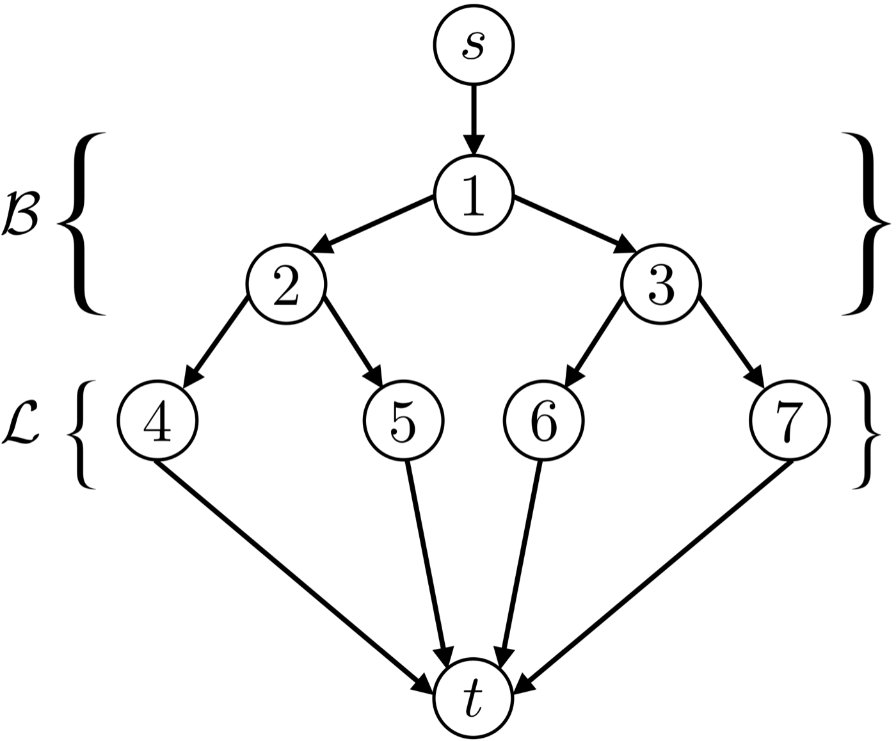
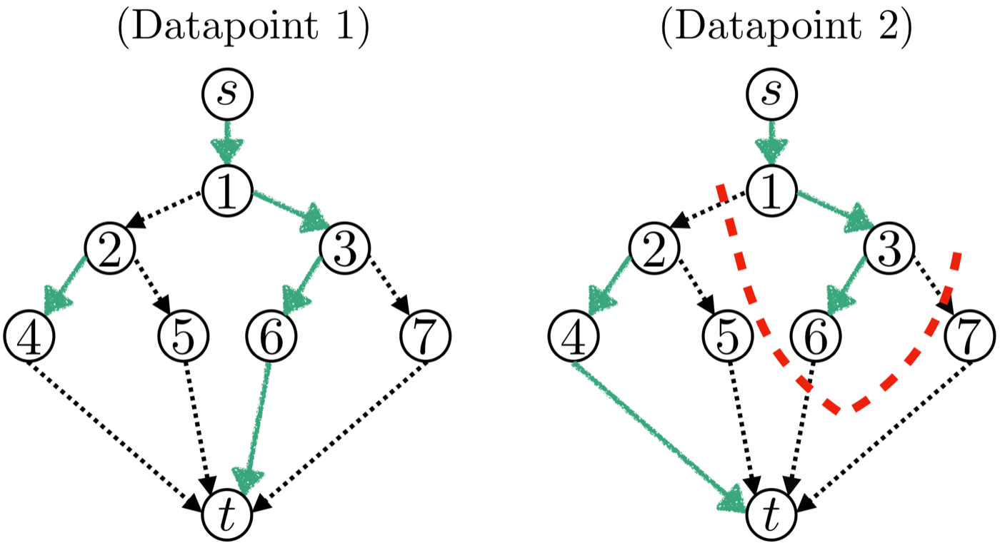
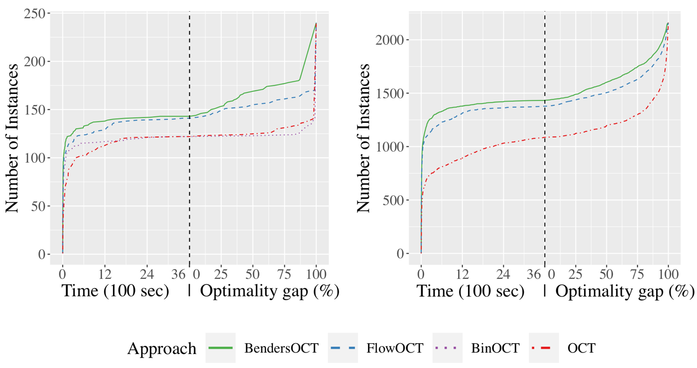

- 29 倍速い深さを固定した木（240 問）で、OCT と BinOCT が制限時間 3,600 秒で解けた 122 問を、BendersOCT は 125 秒で解いた。深さが葉ごとに違ってよい木（2,400 問）では、OCT の 1,087 問を 71 秒で解いた（51 倍）。
- LP 緩和が強い二値の特徴量のとき、FlowOCT の LP 緩和は OCT と BinOCT のどちらの LP 緩和よりも強いことを証明した。big-M の制約を使わない。
- 平均精度 0.80カテゴリの特徴量だけの 12 データ × 深さ 4 通りの 48 例で、テストデータでの平均精度は BendersOCT 0.80、BinOCT 0.79、OCT 0.76 だった。
既存の MIO の定式化は LP 緩和が弱く、分枝限定法がなかなか探索を打ち切れない
最適な決定木を求める問題は NP 困難で、CART や C4.5 のような貪欲法が広く使われてきた。OCT（Bertsimas & Dunn 2017）以降、混合整数最適化（MIO）で最適な木を学習する研究が増えた。MIO は既製のソルバーが使え、公平性などの制約も書き足しやすい。
MIO は分枝限定法で解く。探索空間を分け、それぞれで LP 緩和を解いて得た上界で枝を刈る。LP 緩和が整数解に近い強い定式化ほど上界が良く、早く刈り込める。ただし強い定式化は変数や制約が多くなりがちで、2 つの目標はぶつかる。たとえば BinOCT（Verwer & Zhang 2019）は OCT よりずっと小さいが、そのぶん LP 緩和が弱く、どちらか一方が常に勝つわけではない。論文は、既存の研究は強い定式化をはっきり求めてはおらず、問題を分解できる構造も使っていないと指摘し、その両方に取り組む。
正しく分類されるデータだけが、根から葉を通って終点へ 1 単位流れるとみなす
深さ \(d\) の完全な二分木に、根につながる始点 \(s\) と、すべての葉からつながる終点 \(t\) を足して有向グラフにする（図1）。特徴量はすべて二値 \(x^i \in \{0,1\}^F\) とする。ノード \(n\) で特徴量 \(f\) を使うかを \(b_{nf}\)、葉 \(n\) がクラス \(k\) を予測するかを \(w^n_k\) で表し、データ \(i\) が辺 \((a(n), n)\) を流れるかを \(z^i_{a(n),n}\) で表す。FlowOCT（深さを固定した基本形）は次の問題である。
流量保存の制約で、ノードに流れ込んだデータは子のどちらかへ出ていく。ノードで選んだ特徴量の値が 0 なら左、1 なら右にしか流れられず、葉から終点へは、その葉の予測がデータのラベルと一致するときだけ流れられる。目的は終点に届いた流量、つまり正しく分類したデータの数の最大化である。誤分類されるデータは流量 0 のままで、どの葉に入るかを表す変数はいらない。
変数と制約の数は \(O(2^d(|\mathcal I| + |\mathcal F| + |\mathcal K|))\) で、OCT の単変量の定式化と同じ程度、BinOCT よりは多い。それでも二値の特徴量のときは、LP 緩和が OCT と BinOCT のどちらよりも強いことを論文は証明した。カテゴリの特徴量は one-hot に、整数の特徴量は「その値以下か」を表す二値の列に変換して使う。実際の実験では、木の複雑さへの罰則を入れ、深さが葉ごとに違ってよい形（目的は \((1-\lambda)\) × 正解数 − \(\lambda\) × 分岐の数）を使っている。

分岐と予測を決める主問題と、データごとの最大流の部分問題に分け、経路をたどるだけで切除平面を作る
分岐 \(b\) と予測 \(w\) を決めると、流れの変数 \(z\) はデータごとに別々に決められる。各データの部分問題は、容量が \((b, w)\) で決まるグラフ上の最大流問題になり、最大流・最小カットの双対性から、その値は最小 \((s,t)\) カットの容量に等しい。そこで BendersOCT は主問題に \((b, w)\) と各データの値 \(g^i \le 1\) だけを残し、カットの容量で \(g^i\) を上から抑える制約（ベンダーズの切除平面）を、分枝限定法の途中で必要に応じて足す。
どのカットを足すかは一般には最小カット問題を解いて決めるが、そうして得たカットは他のカットに支配される弱いものになりうる。論文は \((b, w)\) が整数のとき、データの経路を根から葉まで深さ優先でたどる手続きを示した（アルゴリズム 1）。たどり着いた葉の予測がラベルと違えば、たどったノードの集合を始点側とするカットを返す。手続きは高々 \(O(d)\) 回で終わり、返すカットはすべて凸包のファセットを定めることも証明されている。つまりそれ以上強められない切除平面である。

罰則つきの木、不均衡なデータ、公平性の制約も同じ枠組みで書ける
深さ \(d\) の完全な木は過学習しやすいので、論文はノードごとに「分岐する」か「予測する」かを選べる形に広げ、分岐の数に罰則 \(\lambda\) をかける。分岐に使う特徴量の数を制限する制約なども、データどうしを結びつけない制約ならベンダーズ分解のまま解ける。誤分類されるデータも追跡する変形を使えば、クラスごとの精度の最悪値を最大にする目的で不均衡なデータを扱え、統計的パリティなどの公平性の制約も足せる。ただし公平性の制約のようにデータどうしを結びつける制約があると、ベンダーズ分解は使えず、1 つの MIO として解く必要がある。
カテゴリのデータでは、BendersOCT は OCT と BinOCT が 1 時間で解いた問題数を 2 分ほどで解き、テストデータの精度も高かった
カテゴリの特徴量だけをもつ UCI の 12 データ（47〜3,196 行）で、FlowOCT と BendersOCT を OCT（論文の著者が二値データ向けに実装）と BinOCT と比べた。各データを学習 50%、調整 25%、テスト 25% に 5 回分け、深さ 2〜5、\(\lambda \in \{0, 0.1, \dots, 0.9\}\) で木を学習した。Gurobi 8.1 を 1 コア・メモリ 4GB で使い、制限時間は 60 分である。
深さを固定した木の 240 問では、OCT と BinOCT が制限時間内に解いたのは 122 問で、BendersOCT は同じ数を 125 秒で解いた（\(\lfloor 3600/125 \rfloor = 29\) 倍）。深さが葉ごとに違ってよい木の 2,400 問では、OCT の 1,087 問を 71 秒で解いた（51 倍）。最適性のギャップも FlowOCT と BendersOCT のほうが小さかった（図3）。一方で限界もあり、3,196 行・38 特徴量の kr-vs-kp では深さ 4 以上で最適解が得られず、深さ 5 のギャップは平均 93% だった（それでもテストデータの精度は 89% で、BinOCT 87%、OCT 66% を上回った）。
| 手法 | 最良だった例の数（48 例中、引き分けを除く） | 平均精度 |
|---|---|---|
| OCT | 7 | 0.76 ± 0.14 |
| BinOCT | 8 | 0.79 ± 0.13 |
| FlowOCT | 8 | 0.79 ± 0.13 |
| BendersOCT | 9 | 0.80 ± 0.14 |
表1 カテゴリのデータでのテストデータの精度（論文の out-of-sample の要約表）。1 例は 1 つのデータと 1 つの深さの組で、5 回の分割の平均をとっている。
最大の改善幅は 8% と 36% と報告されている。ただし本文は「BinOCT に対して 8%、OCT に対して 36%」と書き、表は「OCT に対して 8%（BinOCT に対して 36%）」と書いていて、どちらが BinOCT 比かの対応が食い違っている（解説者の注）。局所探索による OCT の近似解法 LST とも比べ、LST は平均 0.52 秒と圧倒的に速いが、240 問中 BendersOCT が良い解を得たのは 67 問、LST が良かったのは 37 問だった。
連続値を含む 28 データでは、BendersOCT は連続値を 5 または 10 区間に分けて one-hot にしてから使い、元のままの連続値を扱う OCT と比べた。OCT は半数以上の問題で数値誤差の問題を起こした。ソルバーが最適と報告した解の木が、実際には多くの点を誤分類していたという。テストデータでの平均精度は 5 区間の BendersOCT が 0.81、OCT が 0.75 で、112 例中 BendersOCT（5 区間か 10 区間）が最良だったのは 71 例、OCT は 25 例だった。

MIO の系統で、定式化の小ささより LP 緩和の強さを選び、分解で大きさを補った
- 解く問題：正解数 − 罰則 × 分岐の数（\((1-\lambda)\) と \(\lambda\) の重み）を、最大の深さ \(d\) のもとで最大にする。不均衡なデータ向けの最悪クラスの精度、公平性の制約も扱う。
- 分岐：単変量。特徴量は二値を前提とし、カテゴリは one-hot、連続値は区間に分けてから二値化する。
- 解き方：フローの定式化を Gurobi で直接解く FlowOCT と、データごとの最大流に分けて切除平面を足す BendersOCT。
（解説者の注）論文は、この方法の変形を観察データからの処方的な木（Jo ら）やロバストな分類木（Justin ら）の学習に使えると述べている。誤分類されるデータに関する変数を除いて定式化を小さくする似た考え方を、Günlük らも提案していたと論文は書いている。
@article{aghaei2025strong,
title = {Strong Optimal Classification Trees},
author = {Aghaei, Sina and G{\'o}mez, Andr{\'e}s and Vayanos, Phebe},
journal = {Operations Research},
volume = {73},
number = {4},
pages = {2223--2241},
year = {2025},
doi = {10.1287/opre.2021.0034}
}
ページの数値と図は arXiv 2103.15965 の最新版のソース（改訂 2 回目の原稿）による。INFORMS の出版版の本文は確認していない。書誌は Crossref で確認した。所属は arXiv 版の表記で、Gómez の所属は大学名なしで書かれている。